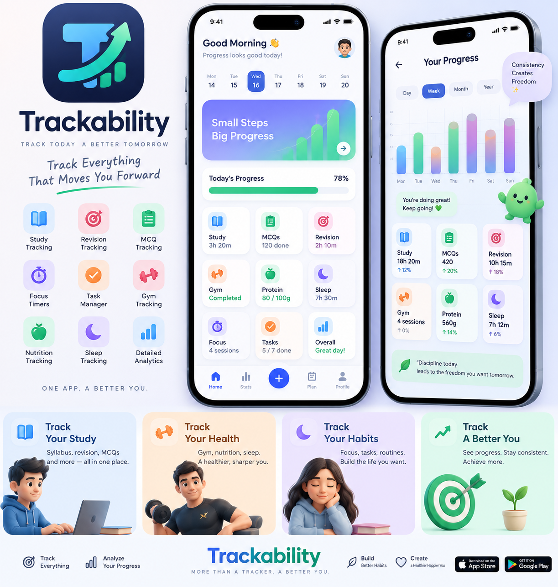

Built from a problem that felt very familiar.
Trackability began with a simple frustration: knowing what needed to be done was not the same as consistently doing it.
From scattered schedules to one connected workspace.
While preparing for demanding exams, Dr. Ankit Bhausaheb Bagul found himself repeatedly trying to make schedules, follow timetables, manage irregular days and avoid distractions. Even simple records—gym sessions, test performance and other routine details—could be forgotten or scattered.
The idea behind Trackability was to bring those pieces together: not another app that only counts study hours, but a workspace that connects planning, focused work, academic practice and the routine supporting it.
The goal is deliberately simple: make progress visible enough that you can act on it.

Dr. Ankit Bhausaheb Bagul, (MBBS)
Founder and operator of Trackability.
Trackability is independently operated and is not affiliated with examination authorities unless expressly stated.
See what came from the idea.
Explore the working app and the system built around it.
Open Trackability ↗